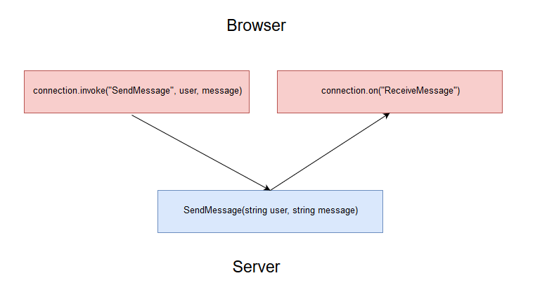

[鐵人賽Day6] SignalR 前端API運用
文章目錄
連接事件
建立連線，我們需要建立一個連線物件，withUrl(Hub)裡的參數放入要連接的Hub名稱，再用build()建立連線物件。
var connection = new signalR.HubConnectionBuilder().withUrl("/Hub名稱").build();
註：Hub名稱不分大小寫
開始連接
使用connection.start()方法開始連接Server，連接錯誤時可用catch()捕捉錯誤
connection.start()
.then(function(){
// 連接成功後要做的事情
})
.catch(function(err){
// 錯誤處理
});
關閉連接
使用connection.stop()方法開始連接Server，一樣錯誤時可用catch()捕捉錯誤
connection.stop().catch(function(err){
// 錯誤處理
});
connection.onclose()可以監聽連接關閉瞬間
connection.onclose(function(e){
// 關閉時想做的事
});
自訂事件
除了連接和關閉事件比較特別之外，其他事件都是自己自訂的事件，當然大部分的基本動作都能呼叫SignalR API不需要全部自己實作。
建立自訂事件
大致流程像這樣，首先使用Connection.invoke()呼叫Hub的方法，這時Hub會依照SendAsync()寫的對象傳回去給connection.on()接收，我們以SendMessage為例，JS像下面這樣寫
connection.invoke("SendMessage", user, message).catch(function (err) {
return console.error(err.toString());
});
invoke的第一個變數會呼應到Hub的方法名稱，所以上面那樣會呼叫到下面這個Hub裡的方法
public async Task SendMessage(string user, string message)
{
await Clients.All.SendAsync("ReceiveMessage", user, message);
}
然後Clients.All.SendAsync.SendAsync()第一個變數會丟回conection.on()事件裡。
connection.on("ReceiveMessage", function (user, message) {
// 接收後要做的事
});
註：這3個方法除了第一個變數是對象外，其他變數都是能自訂的資料，數量也沒有限制
流程圖
看不懂沒關係，我還多畫了流程圖，這樣應該會比較好了解 
到這邊已經把SignalR的基礎運作都說完了，下一篇我們來講講群組的運作。